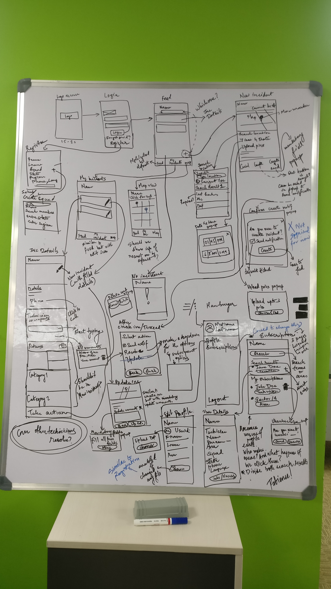
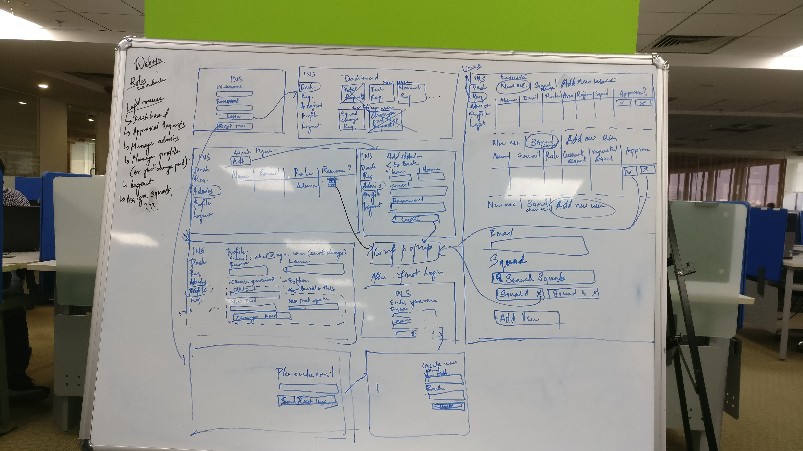

01
Initial requirements
To allow the squads to capture details of suspect package and let other squads know and help about the suspect package resolution.
02
Research done
To understand the context of the project we had did background research in order to find out more
about
the problem scenario and the sensitivities involved.
- Bomb squad carry a lot of sensitive information which couldn't be dispensed to general
public
- Privacy is a huge concern so must not be left unattended.
- The correctness and timing of info plays an important role.
- Steps should be intuitive and should be easy to understand as its a high risk scenario.
- Management of data and accounts should be appropriately handled by authorities.
03
Process followed
The following diagram shows the steps which were followed during the project. The team included
myself
as the lead
designer and the manager. Since the process was not defined previously, we had to come up and
convince
the authoritiee
of the process which would be suitable.

04
User profiles
The user profiles can be broadly categorized into 3 types. The profiles are divided based on their
privileges and roles.

05
Ideation phase
We did multiple brainstorming sessions with the team for the application and with the developers so
as
to
understand the feasibility issues.
After several Divergences and Convergences of ideas and
solutions
we can up with the main features the application must have. These features are demonstrated below.

06
Whiteboard ideation
Below given are some of the handsketches where ideation was being brainstormed. Here we came up with the approximate flows and the features the appication should have.

07
Information architecture
Below given is the basic information architechture of the application.

08
Design guidelines

09
Mobile screens
Below given are some of the screens of the application. Since the requirement of the application was to be simple, the wireframes are omitted as they are very similar to the user interface.

10
Web application
A separate web application was proposed by us for the admins to manage the technicians' and non-technicians' account related activities.
11
Why is it required
After a thorough look at the architecture of the application we felt the need of another application
for
management
of accounts. Below some of the reasons are listed down.
- Initially all the entries added by a database programmer. Thus dependency on external role.
- The addition and deletion can't be done by the member of squad so the Trust and Privacy
issue.
- Web interface could simplify the process of manage of squads and minimum external support
would
be required.
12
Tasks aims
The web application would serve the following purpose of these following tasks.

13
Whiteboard ideation
Below given are some of the handsketches where ideation was being brainstormed. Here we came up with the approximate flows and the features the appication should have.

14
Information architecture
Below given is the basic information architechture of the application.

15
Wireframes
Below given are some of the wireframes for the application.

16
Design guidelines

17
Web screens